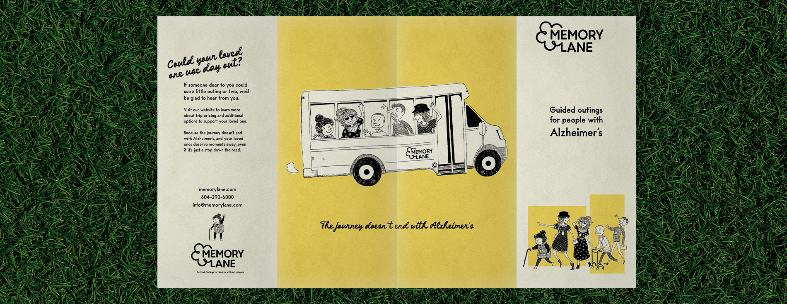
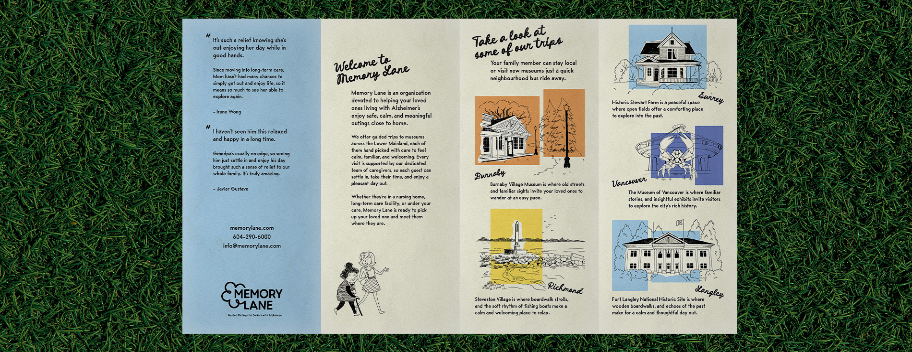
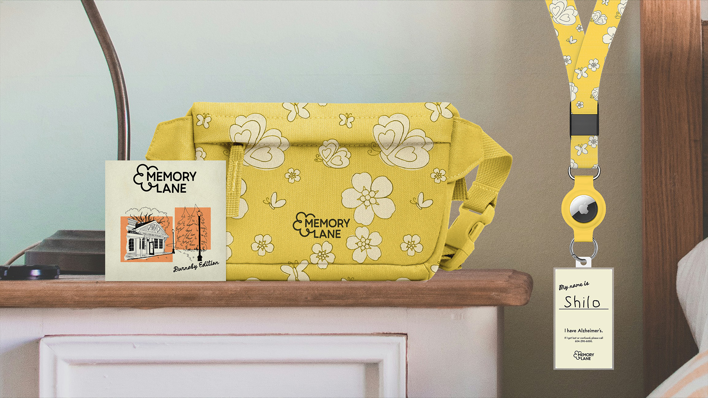
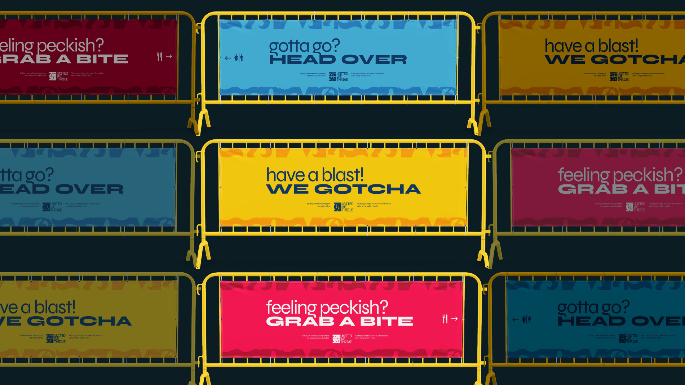
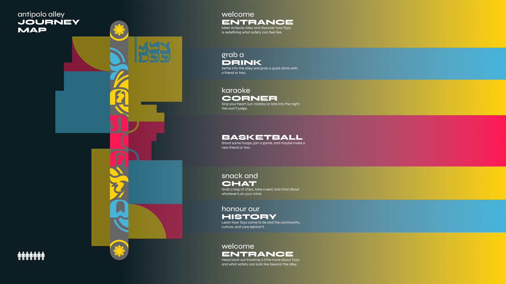
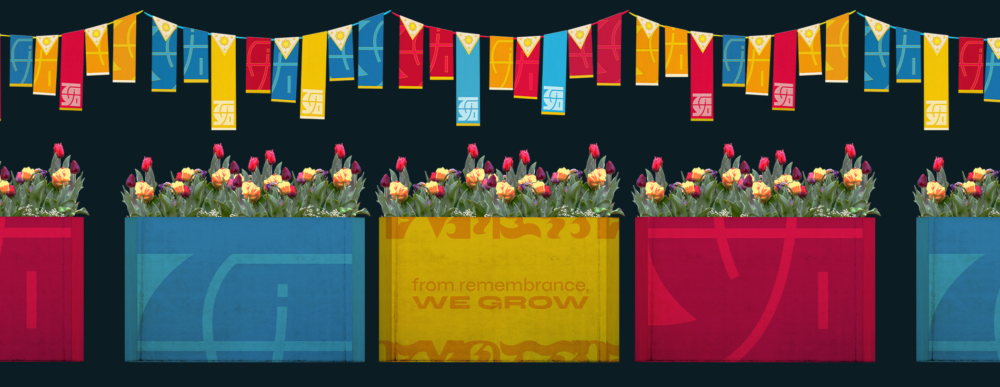
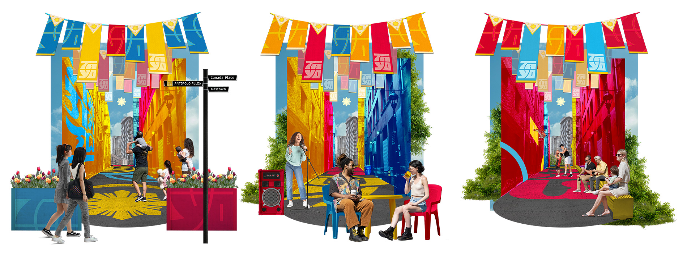

THE JOURNEY DOESN'T END WITH ALZHEIMER'S
Memory Lane provides affordable, guided local outings for seniors with Alzheimer’s across the Lower Mainland. Through thoughtfully planned experiences, we support their physical and cognitive well-being while bringing more connection and enrichment into their everyday lives.
This project was made in collaboration with Shilo Sun who was responsible for all ilustrations.


TARGET AUDIENCE
We recognize the stress that can follow a loved one’s diagnosis, as well as the emotional weight of watching that person change over time.
Through 50's inspired illustrations, warm colours, and simple layouts, Memory Lane guides audiences through its local outing programs with clarity and ease. Our goal is to make this process feel simple and supportive, offering families and their loved ones a small moment of relief.

SHIFT IN TONE
At the heart of Tayo is a simple belief: everyone deserves to celebrate without fear. Because when people feel truly safe, they're free to express themselves, connect with others, and enjoy the moment.
Drawing from the shapes of Baybayin and the colours of the Philippine flag, Tayo's visual identity brings together symbols of cultural pride, strength, and protection.

INTRODUCING... ANTIPOLO ALLEY
Named after a culturally rich city in the Philippines, Antipolo Alley brings Tayo's mission beyond events and festivals and into our everyday lives. Looking after our communities shouldn't stop when the celebrations end. That same feeling of care and belonging deserves a place in the streets we walk, run, and play in.
For those who witnessed or were directly affected by the Lapu Lapu Festival attack, Antipolo Alley offers a space to rediscover the joy of celebration while feeling safe, supported, and connected to their community.



A WALK THROUGH THE ALLEY
Reflecting the bustling streets of the Philippines, Antipolo Alley welcomes visitors through an inviting entryway, complete with all-day karaoke and a classic basketball hoop at the centre of the lane.
By bringing a sense of home and familiarity to the Filipino community, Antipolo Alley serves as a symbol of safety and celebration, honouring those who have passed while nurturing the lives that continue to thrive.
-
With every project I scrounge up and every tale I weave, there’s one thing at the heart of it all: creating for the everyday person and the communities they call home.